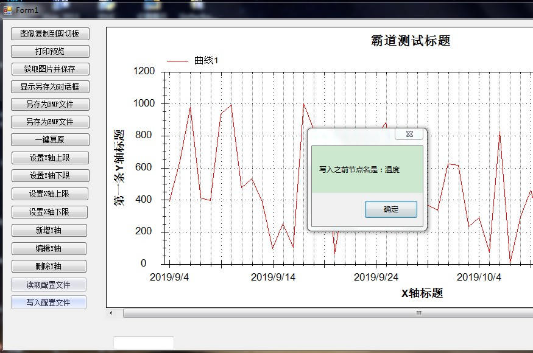

Winform中自定义xml配置文件，并配置获取文件路径：
https://blog.csdn.net/BADAO_LIUMANG_QIZHI/article/details/100522648
上面已经实现自定义配置文件的配置和读取的基础上，继续对配置文件进行读取与写入。
xml配置文件如下：
<?xml version="1.0" encoding="utf-8" ?>
<Configure>
<!--Y轴数量 默认是1-->
<yConut>1</yConut>
<!--Y轴集合-->
<YAxis>
<!--第一条Y轴-->
<YAxi>
<num>1</num>
<title>温度</title>
<color>black</color>
<min>-1500</min>
<max>1500</max>
</YAxi>
<!--第二条Y轴-->
<Yaxi>
<num>2</num>
<title>电压</title>
<color>black</color>
<min>-1500</min>
<max>1500</max>
</Yaxi>
</YAxis>
</Configure>
关注公众号
霸道的程序猿
获取编程相关电子书、教程推送与免费下载。
大量编程视频教程：https://space.bilibili.com/164396311
添加一个工具类的方法
public static void readConfig()
{
//获取可执行文件的路径-即bin目录下的debug或者release目录
string context = System.Windows.Forms.Application.StartupPath;
string path = String.Concat(context,@"\config\YAxisSet.xml");
XmlDocument xml = new XmlDocument();
//打开一个xml
try
{
xml.Load(path);
//选择匹配 XPath 表达式的第一个 XmlNode
XmlNode Configure = xml.SelectSingleNode("Configure/YAxis/YAxi");
//读取节点数据
if (Configure !=null)
{
string portName = Configure.SelectSingleNode("title").InnerText;
MessageBox.Show("第一个节点名是：" + portName);
}
}
catch (Exception ex)
{
Console.WriteLine(ex.Message);
}
}
然后添加一个按钮，在按钮的点击事件中调用此方法
private void simpleButton1_Click(object sender, EventArgs e)
{
ConfigAccessUtils.readConfig();
}
同样在工具类中新增方法
public static void writeConfig()
{
//获取可执行文件的路径
string context = System.Windows.Forms.Application.StartupPath;
string path = String.Concat(context, @"\config\YAxisSet.xml");
XmlDocument xml = new XmlDocument();
//打开一个xml
try
{
xml.Load(path);
//选择匹配 XPath 表达式的第一个 XmlNode
XmlNode Configure = xml.SelectSingleNode("Configure/YAxis/YAxi");
//读取节点数据
if (Configure != null)
{
string portName = Configure.SelectSingleNode("title").InnerText;
MessageBox.Show("写入之前节点名是：" + portName);
}
//写入节点数据
Configure.SelectSingleNode("title").InnerText = "霸道";
string afterWrite = Configure.SelectSingleNode("title").InnerText;
xml.Save(path);
MessageBox.Show("写入之后节点名是：" + afterWrite);
}
catch (Exception ex)
{
Console.WriteLine(ex.Message);
}
}
写入之前

写入之后
注：
进行修改配置文件的内容，真正被修改的是bin下的debug目录下的配置文件。